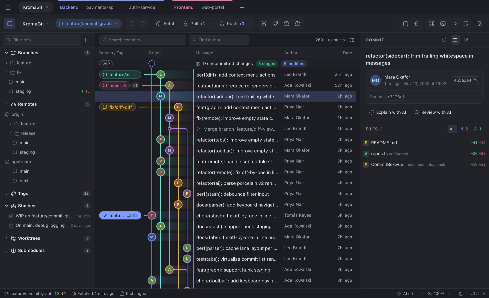
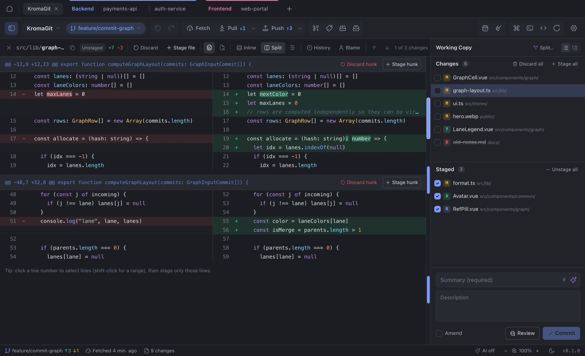
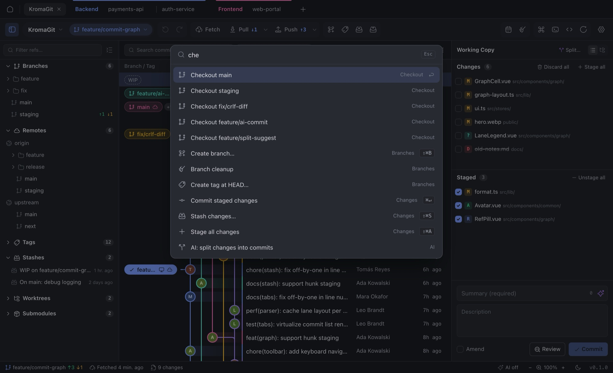
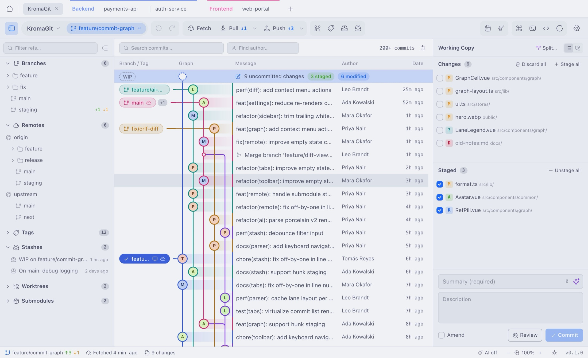

A graph that reads at a glance
Coloured lanes, clear merges, author pictures and branch pills. Opens 50,000-commit repositories in well under a second.
KromaGit is a fast, local-first Git client. See your whole history as a graph you can read at a glance, stage exactly the lines you mean, and undo almost anything — no account, no server, no telemetry.

Everyday Git, made visible
KromaGit drives the git you already have installed, so it behaves exactly like the command line.
Coloured lanes, clear merges, author pictures and branch pills. Opens 50,000-commit repositories in well under a second.
Whole files, single hunks or selected lines. Inline or side-by-side diffs with word highlights, and before/after previews for images.
Checkout, commit, discard, reset, delete a branch — undo and redo, guarded so it refuses if the repository changed behind your back.
Every repository is a tab. Put them in coloured groups, collapse them, drag to reorder, and open submodules or worktrees in one click.
Follow a file through renames, see who changed each line and when, and jump straight to the commit behind it.
Open a real shell in the current repository without leaving the app, for the odd command a button doesn't cover.
Changes

Keyboard

Optional AI
Run a local model with Ollama for free, or bring your own key for Claude, OpenAI or Gemini. Keys live in your OS keychain.
Written from the staged diff, in your team's convention or learned from your recent commits.
Flags likely bugs, leftover debug code and committed secrets, linked to the file and line.
A plain-language summary of what changed, why, and what to double-check.
Proposes logical commits by file or hunk. Edit the plan, apply in one click, undo in one click.
“What did I do?” across every open repository for today, this week or any range.
Merged, gone and stale branches in a checklist, deleted only after you confirm.
Your code stays yours. The first request to a cloud provider shows exactly what will be sent and asks first. Likely secrets are redacted, .env and key files are never sent, and nothing changes in your repository until you click.
Themes
Kroma Dark, Midnight, Dim, Kroma Light and Paper — plus VS Code, GitHub, One Dark Pro, Tokyo Night, Catppuccin, Dracula, Nord and Ayu.


Download
Needs git installed. Prefer to build it yourself? pnpm install && pnpm tauri build
FAQ
Yes. KromaGit is MIT licensed with no paid tier, no account and no sign-in. AI features are optional; with Ollama they cost nothing, with a cloud provider you pay that provider directly with your own key.
Not unless you turn on a cloud AI provider and confirm a request. KromaGit has no server and sends no telemetry. Profile pictures are looked up from GitHub and Gravatar by email — you can switch that off in Settings.
Builds without an Apple developer signature trigger a warning on first launch. Right-click KromaGit in Applications and choose Open, or allow it under System Settings → Privacy & Security. You only need to do this once.
It's small and native (Tauri, not a bundled browser), runs your real git, makes almost every action undoable, and keeps AI strictly optional and on your terms.
Open an issue on GitHub. Pull requests are welcome too.